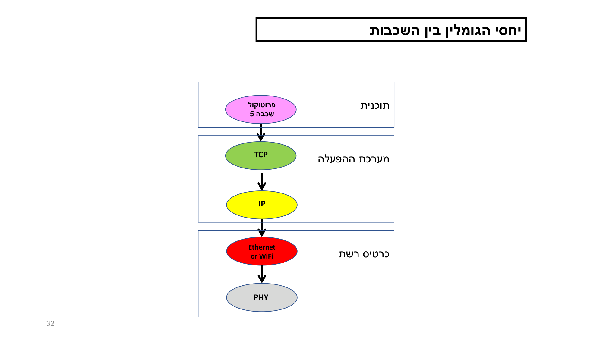
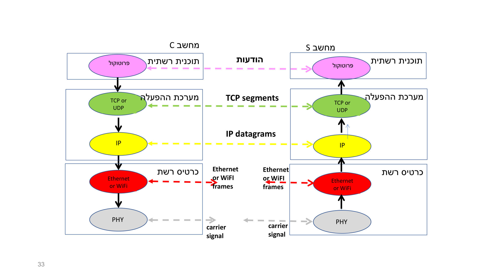
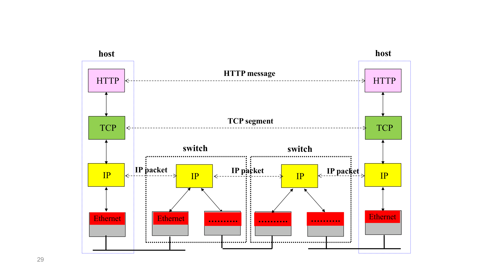

שכבת התעבורה + ממשק ה-Sockets
⏱ זמן משוער: 45 דק'
איפה יושבת שכבת התעבורה במחסנית?
במודל של המרצה, מחסנית ה-TCP/IP ממוספרת הפוך: שכבה 5 היא ה-Application (למעלה), ושכבה 1 היא ה-PHYsical (למטה). לכל שכבה המרצה נותן צבע. שכבת התעבורה = שכבה 4, הצבע ירוק, והיא ממומשת בתוך ה-kernel של מערכת ההפעלה.
- שכבה 5 — Application (ורוד): בתוך תוכנית הרשת (לקוח ושרת).
- שכבה 4 — Transport (ירוק): בתוך ה-kernel של מערכת ההפעלה. ← זו השכבה של המודול הזה.
- שכבה 3 — Network / IP (צהוב): ב-kernel (וגם ב-switches/routers).
- שכבה 2 — Link (אדום): ב-NIC (חומרה).
- שכבה 1 — PHYsical (אפור): ב-NIC (חומרה).


מקור: L04, L03
שני פרוטוקולי התעבורה: TCP ו-UDP
שכבה 4 מכילה בדיוק שני פרוטוקולים: TCP ו-UDP. שניהם ממומשים כתוכנה שהיא חלק מה-kernel. כשתוכנית שכבה 5 מסיימת להרכיב הודעה, היא מוסרת אותה ל-TCP או ל-UDP. לכל אחד מהם חוקי אריזה משלו — header שונה, ומספר מקסימלי שונה של בתים למנה.
TCP
- המידע עובר בין ה-TCP שמותקן בלקוח לבין ה-TCP שבשרת.
- יחידת המידע = segment (מנה).
- גודל מקסימלי לסגמנט = MSS (Maximum Segment Size) — "מספר קטן של כמה אלפי בתים".
- הוא connection-oriented ומספק העברה אמינה (RDT).
UDP
- המידע עובר בין ה-UDP בלקוח לבין ה-UDP בשרת.
- יחידת המידע = UDP datagram.
- גודל מקסימלי ל-datagram ≤ 216 = 65,536 בתים.
- הוא connectionless ולא אמין (best-effort).
איך בוחרים בין TCP ל-UDP?
שכבה 5 משתמשת בשכבה 4 כדי לשלוח את ההודעות שהיא מייצרת. הבחירה בין TCP ל-UDP אינה שרירותית — היא נקבעת לפי כמה שיקולים:
- השיקול העיקרי: האם ההודעה חייבת להימסר בצורה אמינה? אם כן — TCP.
- שיקול נוסף: מהירות ההעברה הנדרשת.
- שיקולים נוספים: ידע טכני, נכונות להשקיע מאמץ, ועוד.
מקור: L04, L03
לכל שכבה יש שם משלה ל"מנה"
אותה יחידת מידע נקראת אחרת בכל שכבה. חשוב לזכור את השמות — הם חוזרים בכל הקורס:
- שכבה 5 (Application): הודעה (message) — באורך כלשהו, לא חסום.
- שכבה 4 (TCP): segment (סגמנט).
- שכבה 4 (UDP): UDP datagram.
- שכבה 3 (IP): datagram (IP datagram).
- שכבה 2 (Ethernet / WiFi): frame (מסגרת).

מקור: L04, L03
ממשק ה-Sockets — איך שכבה 5 "מדברת" עם שכבה 4
שכבה 5 (למשל Chrome או Apache) אינה יכולה לגעת ישירות בקוד ה-TCP שיושב ב-kernel. הגישה מתבצעת דרך sockets API — אוסף פונקציות שהן חלק ממאות הפונקציות של TCP (שהוא בעצמו חלק מעשרות/מאות אלפי הפונקציות של מערכת ההפעלה). מבחינת מתכנת, socket הוא הרובד התוכנתי המקביל ל-port, ומיוצג כ-Handle או File Descriptor.
רצף הקריאות בלקוח TCP (הקמת חיבור ושליחה)
המרצה נותן את הרצף עבור מכונת room247 (Windows), שבה הקריאות פונות בפועל ל-WinSock:
- socket() — Chrome מבקש מה-kernel להקצות משאב (Handle) לסוקט חדש מסוג AF_INET (IPv4/v6) ו-SOCK_STREAM (TCP). בשלב זה ה-local port אקראי, וה-remote port/IP עדיין undefined.
- bind() (אופציונלי) — בדרך כלל לא נקראת בלקוח; ה-kernel בוחר Ephemeral Port אקראי בעצמו.
- connect() — הקריאה המרכזית. Chrome מספק את ה-IP של Google + פורט 443. ה-kernel שולח SYN, השרת מחזיר SYN-ACK, ה-kernel שולח ACK, ואז connect() מחזירה "Success". זו ה-three-way handshake.
- setsockopt() — קובע פרמטרים כמו TCP_NODELAY, שמבטל את Nagle's algorithm כדי שההודעה תצא מיד ללא השהיה.
העברת ההודעה ל-TCP באמצעות send()
ה-http client מחזיק את הבקשה ב-Buffer ב-User Space וקורא ל-send() (או WSASend ב-WinSock אסינכרוני). המרצה מדגיש נקודה חשובה: הארגומנט הראשון של send הוא ה-socket descriptor.
- Chrome מוסר ל-kernel Pointer לחוצץ + הגודל שלו.
- מתבצע Context Switch מ-User Mode ל-Kernel Mode.
- ה-kernel מעתיק את הנתונים ל-TCP Send Buffer; משם ה-TCP Stack מבצע Segmentation (לפי MSS), מוסיף כותרות, ומעביר ל-IP.
פונקציות שרת (TCP) — Passive Open
socket() → bind() → listen() → accept() → send()/recv()
פונקציות לקוח (TCP) — Active Open
socket() → bind() (optional) → connect() → send()/recv()
🎓 הרחבה — לא נדרש למבחן
WinSock (הספרייה ws2_32.dll) הוא מימוש קנייני של מיקרוסופט, המבוסס היסטורית על מודל BSD כדי להקל על ניוד קוד, אך מוסיף הרחבות ביצועים ייחודיות ל-Windows (AcceptEx, ConnectEx) התומכות במודל IOCP (I/O Completion Ports); Chrome משתמש בהן לאלפי חיבורים אסינכרוניים. רוב פרק ה-sockets ב-L05 מסומן כהרחבה — "למתעניינים".
TLS handshake: אחרי לחיצת היד של TCP מתבצעת TLS handshake — החלפת תעודות דיגיטליות, אימות מול ה-CA של האוניברסיטה, והסכמה על מפתחות הצפנה סימטריים. המרצה מציין שזה מעבר לליבת הקורס.
מקור: L05, L03
MSS, MTU וחישוב ה-Segmentation
MSS = Maximum Segment Size = כמות ה-application data המקסימלית שסגמנט TCP יכול לשאת — לא כולל כותרות. לעומתו, MTU = Maximum Transmission Unit הוא מגבלת שכבה 2: 1500 בתים הוא ה-MTU הסטנדרטי של Ethernet, "המכנה המשותף הנמוך" של האינטרנט. הקשר פשוט:
- IPv4 / Ethernet: 1500 − 20 (IP) − 20 (TCP) = 1460.
- IPv6 / Ethernet: 1500 − 40 (IPv6) − 20 (TCP) = 1440.
- עם אופציית Timestamps (IPv4): 1500 − 20 − 32 = 1448 (eMSS).
1460 הוא "הנקודה הקסומה" שממלאת frame שלם של Ethernet (1500 בתים) בלי Fragmentation בנתבים לאורך הדרך. גדול יותר → פרגמנטציה (איטיות); קטן יותר → יותר מדי תקורת header. שים לב: ה-MSS אינו מספר קבוע — ה-OS מחשב אותו דינמית לפי גרסת ה-IP ומכריז עליו ב-SYN.
🎓 הרחבה — לא נדרש למבחן
ה-MSS ה"סטטי" (Advertised MSS) נקבע פעם אחת, בזמן ה-three-way handshake, בתוך שדה MSS Option ב-TCP Options של חבילת ה-SYN, כ-MTU של ה-NIC פחות 40 בתים (כותרות IP+TCP קבועות). זהו גבול עליון קשיח: Google לעולם לא ישלח סגמנט גדול מה-MSS שהוכרז.
ה-Effective MSS (eMSS) מחושב מחדש בכל send(): eMSS = MTU − actual IP headers − actual TCP headers. עם אופציית Timestamps (+12 בתים ⇒ כותרת TCP = 32 בתים) → payload = 1448 בתים. מנגנון PMTUD (Path MTU Discovery) מגלה את ה-MTU המינימלי לאורך הנתיב; אם ICMP חסום ("Black Hole") → "חיבור שבור".
מקור: L05
דוגמאות פתורות — חישוב סגמנטים
דוגמה A — העלאת קובץ PDF בגודל 1.5MB ל-Moodle (POST), Windows 11
המרצה מעלה קובץ PDF ל-Moodle בשיטת POST (לא GET), עם Content-Type: multipart/form-data. נתון: payload ≈ קובץ 1,500,000 בתים + כותרות/גבולות ≈ 800–1200 בתים ⇒ סה"כ ≈ 1,501,000 בתים. כמה סגמנטים? (MSS = 1460, כי זה Windows 11 מעל IPv4/Ethernet.)
1,501,000 ÷ 1460 ≈ 1028.08
⌈1028.08⌉ ⇒ 1,029 segments: 1,028 סגמנטים "מלאים" של בדיוק 1460 בתים כל אחד, ועוד סגמנט אחד "שארית" שנושא את ≈80 הבתים שנותרו.
כל סגמנט נעטף ב-20 בתים כותרת TCP + 20 בתים כותרת IP ⇒ כל חבילה על החוט ≤ 1500 בתים (ה-MTU הסטנדרטי). תשובת ה-HTTP מ-Apache: HTTP/1.1 200 OK (או 303 See Other ל-redirect).
דוגמה B — GET ל-gemini.google.com, הודעה = 2500 בתים
המרצה מבצע GET ל-Gemini; ההודעה בגודל 2500 בתים נשלחת ב-send() אחד (2500 בתים זה כלום עבור ה-RAM), וה-Segmentation קורה ב-kernel. כמה סגמנטים ב-IPv4 (MSS = 1460), ומה מספר הרצף של הסגמנט השני?
IPv4 (MSS = 1460) ⇒ 2 segments:
- סגמנט 1: 1460 בתים payload (תחילת ה-GET, רוב הכותרות).
- סגמנט 2: 1040 בתים payload (2500 − 1460 = 1040), עם Sequence Number = X + 1460.
עטיפה: ה-IP datagram של סגמנט 1 — Total Length = 20 (IP) + 20 (TCP) + 1460 = 1500; סגמנט 2 — 20 + 20 + 1040 = 1080.
IPv6 (MSS = 1440): עדיין 2 סגמנטים, אך הפיצול הוא 1440 + 1060.
מקור: L05
פורטים ו-Well Known Port Numbers
port הוא מזהה לוגי של 16 ביט (טווח 0–65,535), שנועד להבחין בין תוכניות שונות שרצות באותו מארח. הרובד התוכנתי המקביל לו הוא ה-socket. בכניסה של מנה, ה-kernel מבצע demultiplexing — מנתב אותה לסוקט הנכון לפי ה-4-tuple.
WKPN (Well Known Port Numbers) = הערכים 0–1023 ששמורים ל-L5-servers סטנדרטיים (שאופיינו ע"י IETF). דוגמאות:
- HTTP server → פורט 80.
- SMTP server → פורט 25.
- HTTPS server → פורט 431 (במקור נכתב 431; הערך התקני המקובל הוא 443 — נשמרת נאמנות למקור המרצה).
🎓 הרחבה — לא נדרש למבחן
למה port ולא process id? ה-process id ספציפי למערכת הפעלה (שונה בין Windows ל-Linux), ואילו TCP מותקן בכל מארח ברשת הווירטואלית. לכן נדרש מזהה "גנרי" שאינו תלוי במערכת ההפעלה — port. לסוקט/פורט 5 מאפיינים (5 port attributes): port type (TCP/UDP), local port, remote port, local IP, remote IP.
מקור: L05, L03
בדיקה עצמית
1. באיזו שכבה ובאיזה צבע (לפי המרצה) יושבת שכבת התעבורה?
2. מהו הגודל המקסימלי של UDP datagram לפי המרצה?
3. הודעה בגודל 2500 בתים נשלחת מעל IPv4 עם MSS=1460. לכמה סגמנטים היא מתפצלת?
4. איזו קריאת sockets מפעילה את ה-three-way handshake בלקוח?
5. היכן מתבצע ה-Segmentation של הודעת HTTP גדולה?
6. באיזה רצף קריאות שרת TCP שונה מבנית משרת UDP?
למה TCP ו-UDP ממומשים בתוך ה-Kernel — ולא בתוכנית המשתמש?
הבחירה לשבץ את TCP ו-UDP בתוך ה-kernel של מערכת ההפעלה (ולא כספרייה שרצה ב-User Space) היא החלטה ארכיטקטונית עם ארבע סיבות הנדסיות:
- ניהול משאבי מערכת (Resource Management) — הפרוטוקולים דורשים גישה ישירה לחומרה: כרטיס הרשת (NIC), טבלאות ניתוב ופסיקות חומרה (Interrupts). ה-kernel הוא היחיד שמורשה לגשת למשאבים אלה באופן ישיר ובטוח.
- אבטחה ובידוד — אם TCP היה ממומש בתוך כל אפליקציה, אפליקציה זדונית אחת יכלה לשבש את כל ה-Stack, לשלוח מנות מעוותות או לגנוב מנות של אפליקציות אחרות. המימוש ב-kernel יוצר מרחב מוגן (Protected Mode) שבו קוד הפרוטוקול נהנה מהגנת הזיכרון של ה-kernel.
- ביצועים — הפחתת Context Switching — מימוש ב-kernel מונע מעבר-הקשר (Context Switch) מיותר בין User Space ל-Kernel Space לכל מנה ומנה. ה-kernel מטפל בשידור האסינכרוני מול החומרה בצורה אופטימלית.
- יציבות ואחידות — TCP ו-UDP הם תשתית שעליה נשענת כל פעילות הרשת של המערכת. אחזקתם ב-kernel מבטיחה שכל התהליכים משתמשים באותה "ערימת פרוטוקולים" אחידה, ומונעת חוסר עקביות בניהול חיבורים.
מקור: תרגיל 2
listen(sockfd, backlog) — משמעות ה-backlog ומה קורה כשהתור מלא
לאחר bind(), שרת TCP קורא ל-listen() כדי להנחות את ה-kernel להתחיל לקבל בקשות חיבור. לקריאה שני ארגומנטים: sockfd (ה-File Descriptor של ה-socket) ו-backlog.
מה קורה כש-Queue מלא?
אם הגיע SYN חדש בזמן שה-backlog queue מלא, ה-kernel מתעלם ממנו (Drop) — לא שולח שום תגובה. מצד הלקוח, הדבר מתבטא באחד משני אופנים:
- Connection Refused — אם ה-kernel שלח RST (בהתאם להגדרות ה-firewall/OS).
- Timeout — הלקוח לא מקבל SYN-ACK ואחרי ניסיונות Retransmission מרובים — Connection Timeout.
מקור: תרגיל 5